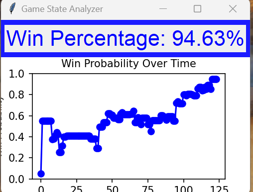

Download the App
Click to DownloadSee the App in Action
Watch the app dynamically calculate win probability based on the current board state in MTG Arena:
How It Works
This app uses machine learning, trained on 17lands data, to predict the probability of winning a match based on the board state. Here’s how it operates:
- Detailed Logs: Ensure that MTG Arena has
detailed logsturned on. - Log Reading: The app reads the log file and activates when a new game is found.
- Dynamic Updates: As the board state changes, win probability is recalculated and displayed in real-time.
The graph below tracks win probability snapshots throughout the game, providing a clear picture of the game’s progression:
Machine Learning Model
The model powering this app was trained on millions of games from 17lands’ publicly available data. Key features include:
- Game state metrics: Cards in hand, lands in play, creatures on the battlefield, and more.
- Win/Loss outcomes: Used as the target variable for prediction.
- Dynamic board evaluation: Adjusts predictions based on changes in game state.
Technical Details
Here are the technical requirements and setup instructions for running the app:
- Platform: Windows
- Setup: Download the app as a .zip file and unzip it. Run the
.exefile to start. - Automation: The app will automatically detect the log file path for MTG Arena. Make sure detailed logs are turned on in the game.
- Privacy: The app only accesses the log file path and does not connect to the internet.
- Windows Security Warning: When running the
.exefile, Windows may display a warning that the file is "untrustworthy." To proceed, click More Info and then Run Anyway. - Support: Feel free to email jwrightzz1234@gmail.com with any comments or questions.
Example log entry showing the app’s activation:
{"state": "GAME_FOUND", "timestamp": "2025-01-01T12:00:00Z"}